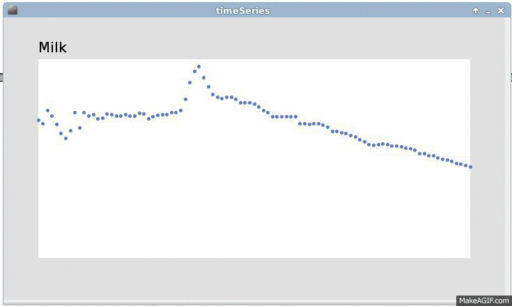
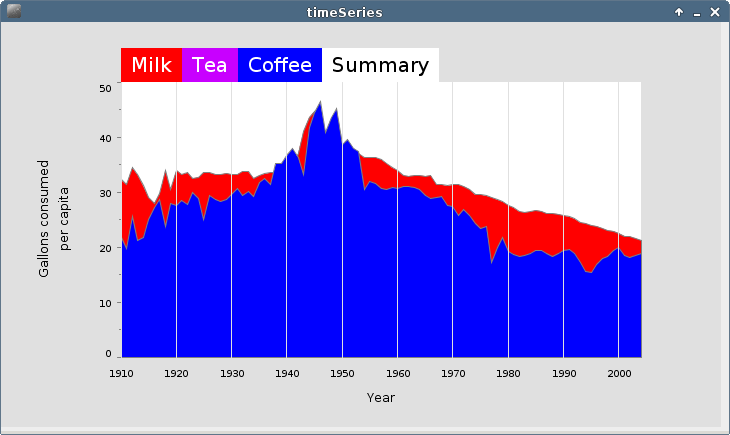
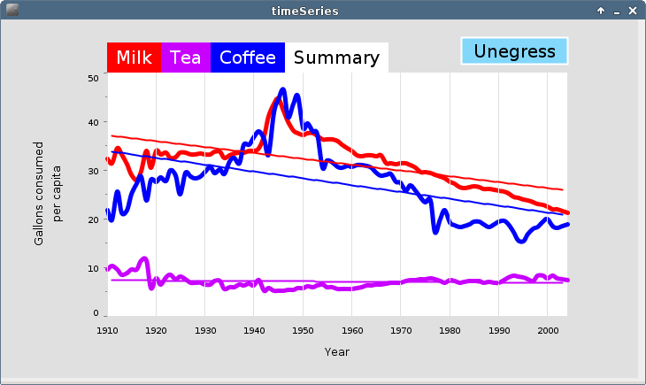

Preparations
In preparation for completing this assignment I obtained a copy of Visualizing Data by Ben Fry and a copy of Learning Processing by Daniel Shiffman. These books were quite helpful. I utilized Shiffman's book in learing how to rotate the y-axis label in Step 2 and for general reference. I also found the Processing api reference page quite helpful.
Though these resources and a few others (including some random Google searches were quite helpful, nothing was as helpful as Visualizing Data. I looked at many of the examples in this book to help formulate my final product. For example, I used the chapter 3 example of the
Color Integratorclass to help with transitioning my colors. I used an example from chapter 6 for additional help with the
Color Integratorclass. When setting up my summary tab to work with the
Integratorclass I looked at chapter 3 and, of course, chapter 4. And finally, I used chapter 4 extensively as this was our assignment.

The Assignment
Step 2
I will start with step 2 because step 1 is pretty self explanatory. For the first part of step 2 I used the following code to execute a change in the font.
titleFont = createFont("Georgia", 30);
textFont(titleFont);
for the Georgia and
titleFont = createFont("Verdana", 10);
textFont(titleFont);
for the Verdana font. I used the command print(Pfont.list()) find out what fonts were already installed. This let me know that Georgia and Verdana were not on my system so I downloaded the .ttf files and saved them in the data folder of my sketch. I chose 30 pt. font for the titles and decided to keep the 13 pt. font on each of the axes. By far the most difficult part of this step was rotating the y-axis label. I did so using the following code
pushMatrix();
translate(x,y);
rotate(-HALF_PI);
text("Gallons\nconsumed\nper capita", 0, 0);
popMatrix();
The one thing that I decided to change was removing line break between "Gallons" and "consumed".
Step 3
In this step I augmented the keyPressed method to include 1 for data points, 2 for connected dots, 3 for a line graph, 4 for the filled chart, and 5 for the bar chart. I also extended the drawDataHighlight method to each of these different formats. I changed the font on the highlight tags to Georgia. I, however, do not like this font in the tags, as it is quite hard to read. The sans serif font is cleaner and lends to a better aesthetic.Step 4 and 5
In this step I used the Integrator class to make a multidimensional array of Integrators so that I could one representation of the data to all three when clicking on the Summary tab and from all three to the selected set of data upon clicking away from the summary tab. The Integrator class offered a very smooth transition when moving from tab to tab. On the Summary tab I also had each of the categrories encoded with a different color. This allows the user to easily differentiate between the three beverages. This gave me an opportunity to implement the Color Integrator class to change from the standard color (#5679C1) to the three colors I used to encode the data. I did really enjoy the Integrator class. I, however, do not see how it adds any information to the time series data. If I were to use it with many many data points I would try to figure out a way to parallelize the computations with some arrays because I think the Integrator would be really slow with so many points.A problem that I ran into was that when I would load the summary tab, if I was using the filled graph or the bar chart the different categories would not load in an order that allowed all to be shown.

In order to solve this I implemented a sorting algorithm to make sure that the categories were executed so that they all were able to be seen.

Step 6
For step 6, I used the lm command in R to find the linear regression equations for each of the beverages. I used the Integrator on each of this to give them a smooth trasitions between each of the categories. I put a button in the corner so that the user could turn the regression lines off and on. Tbough the regression line does, sometimes, give a good idea of the trends in the data, I feel like it glosses over some of the more signifincant changes in th the data. For instance the linear regression completely misses the extreem rise in milk and coffee consumption at about the middle of the 20 th century. At this point in the graph the linear regression shows that mik and coffen were trending down. This is a big problem with linear regression models. Here is a picture of the visualization with the regression lines.